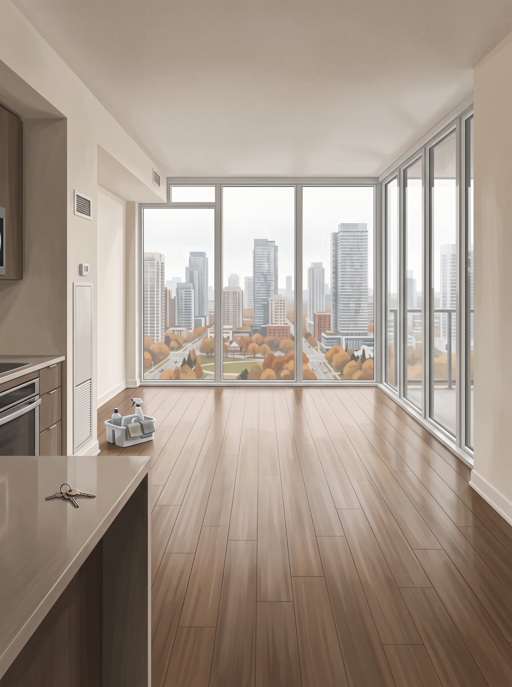
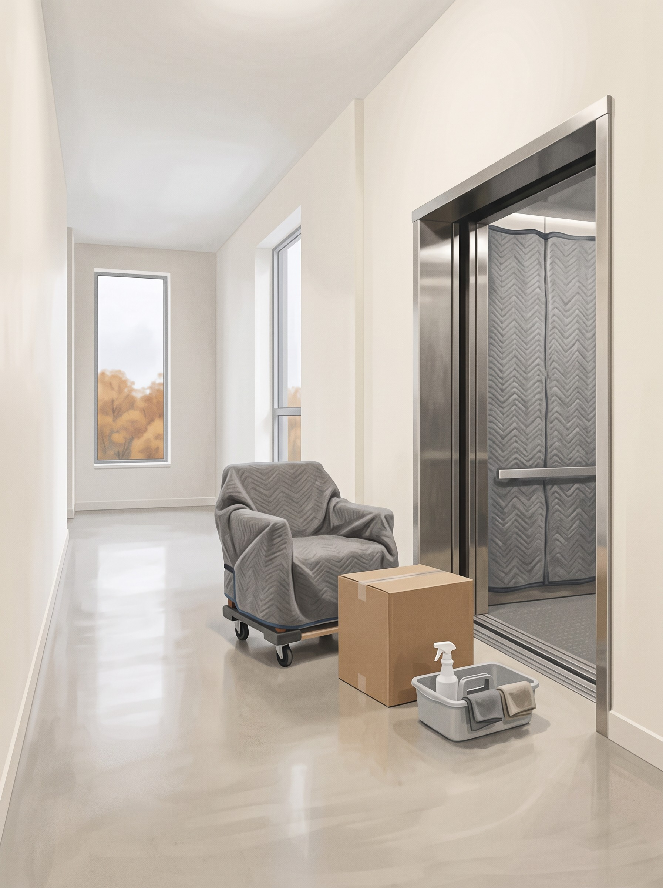
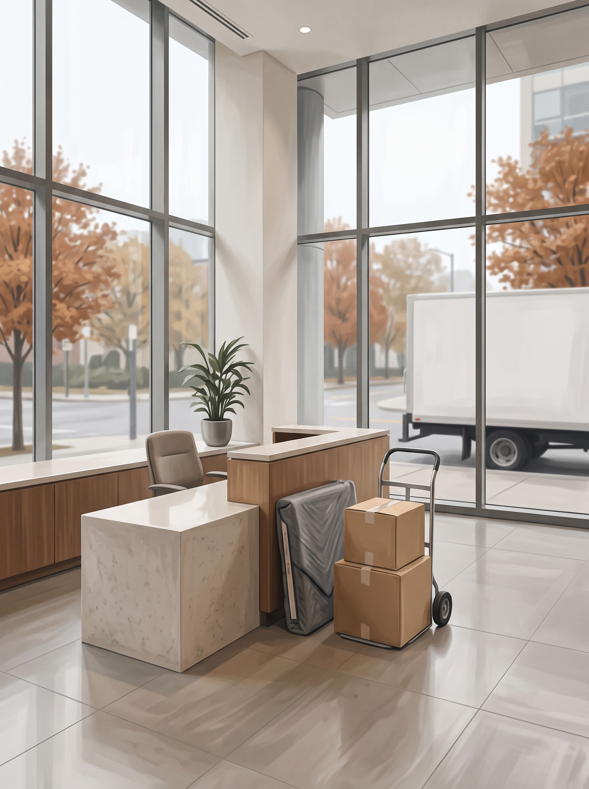
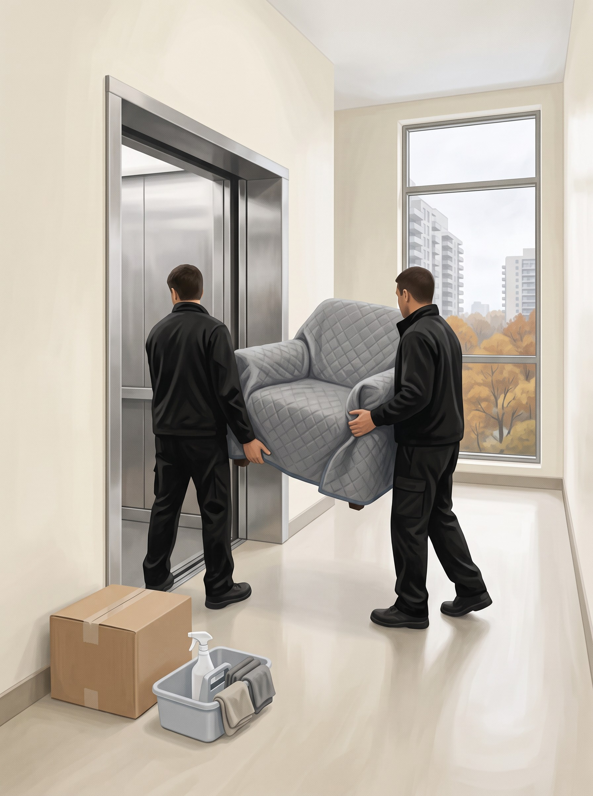

A plan, a time and a crew that knows the city.
Your arrival window is set when you book and printed on your quote.
The quote you approve is the bill you pay. No extras on the day.
Elevator bookings, loading docks, access rules. Sorted before we arrive.
LICENSED · INSURED · LOCAL
Locked for section 04. The promise ledger on the left, and on the right a four-image carousel that shows the promises being kept across every service: cleaning (a move-out unit handed back clean), moving (the padded service elevator), delivery (the concierge desk), and it stops on the crew carrying a chair with care. The carousel waits until the promises have written in, plays once at 6 seconds a slide, pauses on hover and when off screen, and ends on the crew with no tag, so the last thing you see is people, not a service label. OT-03 Marked Statements is the fallback.
| Fit with the copy · 9 | "Your window, in writing" and "A price that holds" are promises about paperwork, which no photo can show; the images carry the third promise and the lead ("a crew that knows the city"). Service elevator, concierge and a handed-back unit are all "we know the buildings" moments, so the left and right sides tell one story. |
| Page rhythm · 9.5 | The first time the homepage shows the service happening. The hero and section 02 set the place, section 03 is an object; this is the first time we show the crew at work. |
| Motion · 9 | One thing at a time: the ledger writes in, then the carousel starts. It plays once and stops, so it never competes with scrolling or the next section. |
| Brand · 9.5 | Ends on the crew: the caregiver side, shown rather than claimed. |